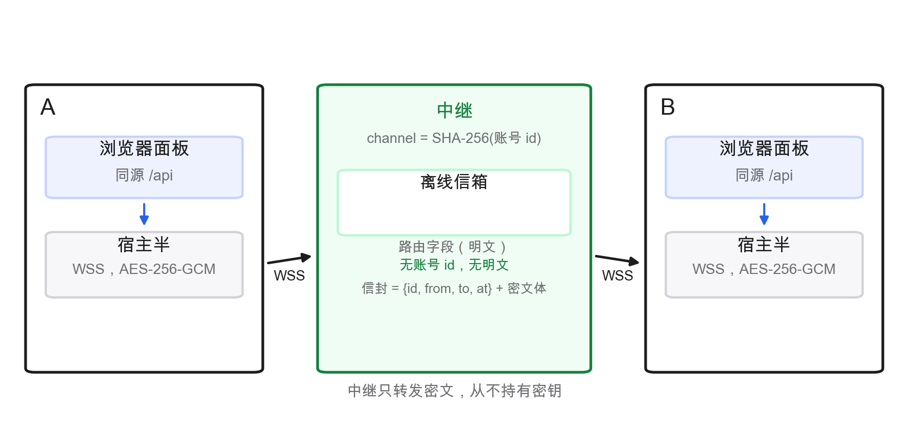
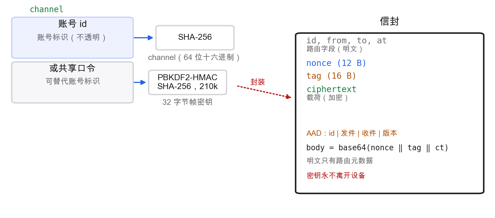
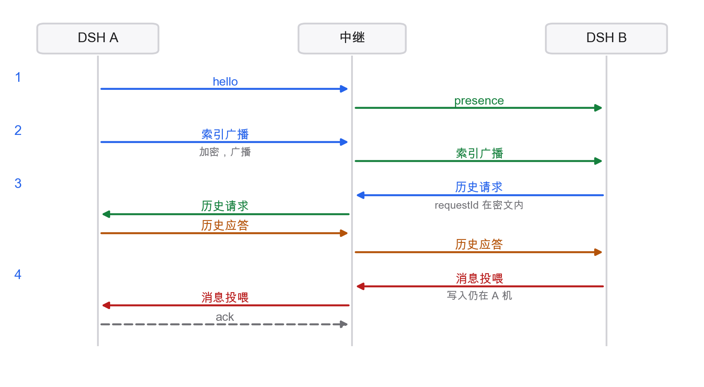
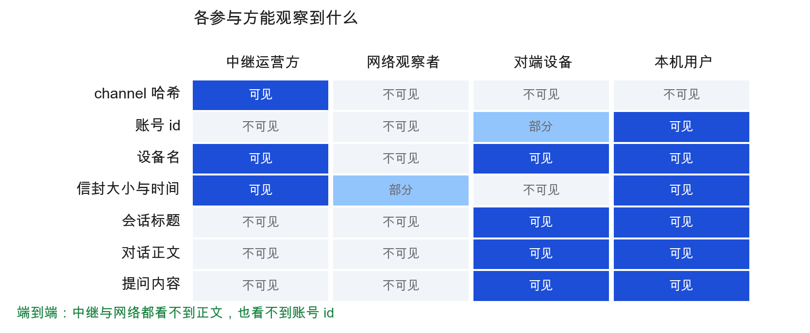
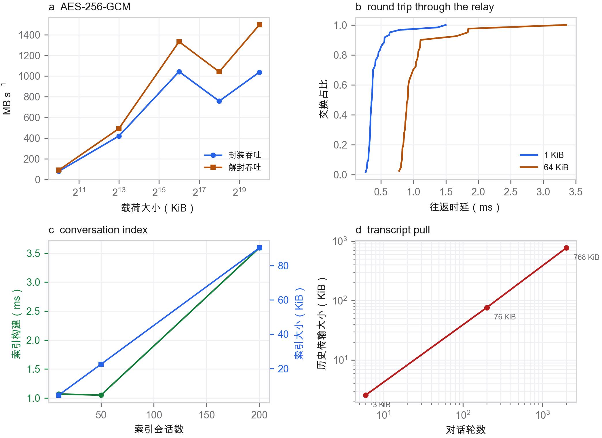
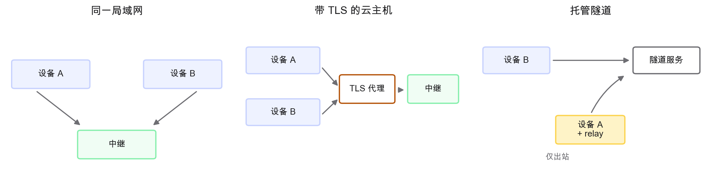
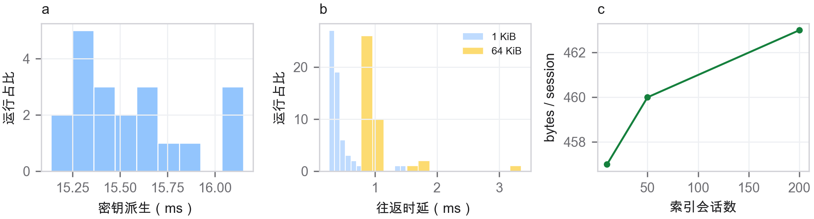

智能体工作站是与聊天窗口不同的一类应用。模型运行在服务提供方一侧，但环绕模型的循环——读取文件、运行测试、编辑代码仓库、维护计划——运行在用户机器上，而记录这一循环的对话是本地产物。在 DeepSeek Harness（DSH）中，该产物是一份只追加的事件日志：每条用户消息、每个助手回合、每次工具调用、每次 todo 改写与 goal 变更都是一个带序列号的事件，以按行分隔的 JSON 持久化并用 zstd 压缩 [[dsh,eventsourcing,jsonl,zstd]]。会话不是被定期保存的文档，而是只能不断追加的日志。这一设计选择使工作站可复现、可审计，也正因此让同步变得困难，因为同一份日志的两个写入者会产生一种任何合并都无法修复的分叉。
然而，多设备访问的需求却是日常的。一位研究者在一台台式机上启动长时间的分析，合上笔记本，想在火车上看看这次运行是否结束、得出了什么结论。一位开发者把笔记本与一台配有 GPU 和数据集的实验室服务器配对，想从笔记本上看到服务器上的会话。这两种情形里，同一个人在两台机器上都处于登录状态，而两台机器都不想沦为对方的瘦客户端：工作必须留在文件与工具所在之处。
已有的机制解决的是相邻的问题。文件同步器复制目录，却不复制日志的语义，它们通过复制文件来合并冲突 [[syncthing]]。Git 镜像极擅长历史，但它假定有一个推送的写入者和一个合并的读取者，并且把完整历史暴露给持有远端的人 [[git,rsync]]。联邦聊天协议给出多设备访问，但须经由一台存储明文、并为用户保管账号的 homeserver [[matrix]]。覆盖网络与隧道让一台机器变得可达，但可达并不等于同步：对端仍须被当作远程桌面来驱动，而会话 index 并不属于连接的一部分 [[tailscale,cloudflared]]。对等复制研究已经为都会写入的副本解决了排序与收敛问题 [[dynamo,bayou,crdt]]，local-first 架构则把副本放到每台设备上 [[localfirst]]；但智能体场景有一个这些系统没有的约束：只能有一台机器执行某个会话，因为工具与文件都在那里。
于是我们提出了一个更窄的问题。什么是最小的机制，能让两台同账号工作站看到彼此的会话与任务状态、按需读取对话正文、把新的 prompt 交给拥有该会话的机器，而自建的 relay 除路由元数据外一无所知？Deep Connect 用四项设计决策作答，每一项都在下文得到评估。第一，已登录账号本身就是共享秘密：设备在本地由它派生 channel 标识与帧密钥，因此没有配对仪式、没有扫描二维码、也没有 relay 上的账号。第二，relay 是一个无依赖的哑路由器，外加一个离线 mailbox；它只看到 channel 哈希与不透明的 envelope，永远看不到密钥，也永远看不到载荷。第三，会话状态以 index 的形式交换，而该 index 派生自那份本就保存着 todo、goal 与 team task 的事件日志，因此任务状态不是第二个需要同步的子系统。第四，远程 prompt 被投递到属主机器并在那里执行，于是日志始终只有一个写入者，也就不需要任何冲突消解。
其结果是一个 {{code_lines}} 行的实现——DSH 内部的宿主半、渲染面板的浏览器半，以及一个 relay——由 174 项自动化检查验证，并做了端到端测量。本文余下部分陈述塑造它的需求（表 1），描述会合、envelope、index、对话正文与移交机制（图 1–3），分析 relay 与观察者能获知什么（图 4），报告性能与规模（图 5 和表 5），最后以设计不得不吸收的故障与仍然存在的边界作结。
表 1 列出了驱动设计的八项需求、满足每项需求的机制，以及证明其得证的证据。其中三项足够特殊，值得直说。R3 禁止任何入站端口：工作站可能位于 NAT 之后，而要求公网地址恰恰会排除本系统存在的理由——实验室服务器场景，因此两台设备都向 relay 发起出站连接，relay 从不拨入 [[tailscale,websocket]]。R5 禁止并发写入：一个会话由一台机器执行，所以其他机器只是读取者和 prompt 转发者，绝不是执行者。R7 禁止 Node 标准库之外的任何运行时依赖，因为 relay 应当由运行工作站的那个人、在一台除 Node 之外可能什么都没装的机器上启动。
由此形成的形态是三个进程与一条线路。在每台工作站上，浏览器面板通过同源路由与本机的宿主半通信，因此面板既不需要跨源例外，也从不接触 channel [[sameorigin]]。宿主半持有到 relay 的 WebSocket、派生出的密钥、本地会话的 index，以及对对端请求的应答。relay 持有以 channel 哈希为键的房间、逐设备的在场状态与一个离线 mailbox（图 1）。这幅图景中没有任何部分要求两台工作站彼此可达，也没有任何部分要求 relay 理解它所转发的一个字节。
| # | 需求 | 机制 | 证据 |
|---|---|---|---|
| R1 | 同账号设备无需配对仪式即可相互发现 | 由已登录账号在本地派生 channel 与密钥；不在线路上交换秘密 | 跨设备的 fingerprint 一致（图 2）；图 4 中的账号 id 行 |
| R2 | relay 绝不能看到对话内容 | AES-256-GCM envelope；关联数据绑定发送方、接收方与版本 | 1,500 个被篡改、被改投和使用错误密钥的帧均被拒绝；图 4 |
| R3* | 两台工作站都不开放入站端口 | 两台设备都通过 WebSocket 向 relay 发起出站连接；在场状态与 mailbox 属于 relay 的状态 | 回环 relay 下的端到端测试；插件中没有任何监听器 |
| R4 | 对端离线期间产生的更新不丢失 | relay 侧的离线 mailbox，带逐设备序列号；重连时排空 | 重连后 {{drain_ms}} ms 内排空 40 个 envelope（扩展数据图 2） |
| R5* | 一份日志恰有一个写入者 | 远程 prompt 被转发给属主并在那里执行；对端从不追加 | 图 3 中的移交路径；端到端套件中序列号从不分叉 |
| R6 | 可从对端读取完整对话正文，而不仅是标题 | 按需拉取，封装为单个 envelope，并作为副本缓存在本地 | 2,000 轮对话正文（{{transcript_2000}} KiB）在一次交换中拉取完成（图 5d） |
| R7* | relay 可在纯净的 Node 安装上运行 | 零依赖：手写 RFC 6455 帧与一个 HTTP mailbox | relay.cjs，含 mailbox 共 {{relay_lines}} 行 |
| R8 | 任务状态随会话一起传输 | todo、goal 与 team 事件从生成 index 的同一份事件日志中折叠得出 | 合成语料测试中，折叠输出与属主机器一致 |

让两台设备获得共享秘密的常见方式是配对仪式：在一台设备上显示一个码、在另一台上输入，或运行口令认证密钥交换，使窃听者一无所获 [[spake2,opaque]]。当两台设备别无其他共享之物时，这些协议是正确的答案。而在这里，两台设备已经共享了某样东西：两份安装共同登录的那个账号。Deep Connect 直接利用这一事实。channel 标识是 SHA-256("dsh-deep-connect/channel/v1|" ∥ accountId)，relay 仅把它当作不透明的房间键；帧密钥是 PBKDF2-HMAC-SHA-256(secret, "dsh-deep-connect/key/v1|", 210,000, 32 bytes) [[pbkdf2]]，其中秘密是账号标识，或者，如果用户更愿意，是在两台机器上逐字输入的口令（图 2）。账号标识从不传输：relay 只看到一个 64 位十六进制的 channel，别无任何能把它映射回某个账号的信息。
有两个推论值得说明。第一，配置成本只是一项设置加一次重启，而不是一场仪式；本文自身的部署就是两台机器加一个 relay，无需交换任何代码。第二，安全性的强度恰好等同于账号的强度，这是有意的取舍。能够登录该账号的设备就能派生出密钥；做不到的设备就派生不出。口令路径是为那些不愿把账号标识当作信任根的用户准备的，面板则显示派生密钥的六字符 fingerprint，好让两台机器在信任第一条消息之前确认彼此一致——参考部署中的 fingerprint 是 {{fingerprint}}。面对账号日后的失陷，系统不具备前向保密，这一点我们在讨论部分再谈。

relay 支持两种协议。在 WebSocket 上，它承载在场状态、envelope 与确认；在明文 HTTP 上它提供一个小的 mailbox API，使对端缺席的发送方仍能交出一个 envelope，也使不支持 WebSocket 的设备仍能参与 [[websocket]]。消息集合被有意做得极小（表 2）。每个帧都有版本、类型，在涉及路由时还有 id、from 与 to；载荷始终是封装正文。relay 校验形状与大小，分配逐接收方的序列号，然后或者投递给活动套接字，或者把 envelope 停放到以接收设备为键的 mailbox 中。
| 类型 | 方向 | 明文字段 | 封装正文 | 用途 |
|---|---|---|---|---|
| hello | 设备 → relay | deviceId、name、协议版本 | — | 加入房间，接收积压 |
| welcome | relay → 设备 | deviceId、seq、待投递数量 | — | 确认加入，报告积压 |
| presence | relay → 房间 | deviceId、name、online | — | 更新名册 |
| message | relay → 设备 | id、from、to、at、seq | kind、payload | 投递一个 envelope |
| ack | relay → 发送方 | id、seq 或 queued | — | 投递或停放回执 |
| ping / pong | 双向 | — | — | 请求前的存活证明 |
| error | relay → 设备 | code | — | 形状、认证或配额失败 |
封装是数据通路上唯一的密码学操作，而且它被有意做得乏味：AES-256-GCM，每帧使用新的 96 位 nonce、128 位标签，关联数据则把 envelope 的身份、发送方、接收方与版本连接起来 [[aesgcm,gcm,aead]]。这一构造正是认证加密接口所推荐的构造，它给出系统所需的两个性质：载荷的机密性，以及路由字段的完整性，使得 relay 既不能把某个帧挪给另一个接收方，也不能降级其版本而不被接收方察觉。不需要 HKDF 的提取步骤，因为经过 PBKDF2 之后口令已经是均匀的字节串，也没有逐消息的密钥分离要做 [[hkdf]]。nonce 取自平台的 CSPRNG；在同一个密钥下，一百万个帧出现 nonce 碰撞的概率约为 2−32，对于上限为 512 个 envelope 的 mailbox 和以数千帧计的会话而言是可以接受的，这也正是密钥在口令改变时轮换、而不是跨秘密复用的原因。
| 参数 | 取值 | 由何覆盖 |
|---|---|---|
| channel 标识 | 带版本、按域分隔的账号字符串的 SHA-256 | channel 跨设备一致；错误秘密测试 |
| 密钥派生 | PBKDF2-HMAC-SHA-256，210,000 次迭代，32 字节输出，带版本的盐字符串 | KDF 确定性；图 5a 中的时延 |
| AEAD | AES-256-GCM，96 位 nonce，128 位标签 | 各套件中对每个封装帧的解封 |
| 关联数据 | id ‖ "|" ‖ from ‖ "|" ‖ to ‖ "|" ‖ version | 改投、重放与版本降级测试 |
| 帧密钥生命周期 | 重启时或口令改变时重新派生 | 重连测试；fingerprint 变化测试 |
| relay 可见性 | channel 哈希、设备名、envelope 大小与时间 | 图 4 审计；relay 从不解析 body |
relay 自身的状态同样很小。一个房间持有若干设备；一台设备持有一组活动套接字、一个单调序列计数器，以及一个容量为 512 个 envelope、存活期为七天、每次访问时清理的有界 mailbox。这里使用手写的 RFC 6455 实现而非某个库，因为 relay 必须能在一套纯净的 Node 安装上运行 [[node]]；HTTP 接口之所以存在，是因为浏览器无法向第三方主机打开原始套接字，也因为一个没有活动对端的发送方仍然需要一个回执。该接口由同一个 channel 头认证，因此 mailbox API 不是一扇敞开的门：缺少 channel 的请求会被拒绝，且无论房间是否存在，返回的错误都相同。
每台设备定期发布其本地会话的 index。index 是派生出来的，而不是存储的：宿主半读取每个会话的头部以及其事件日志有界的一段尾部，把它们归约成一行，包含标题、最后更新时间、事件计数、最近若干 prompt，以及日志所蕴含的任务计数。由于 todo、goal 与 team task 本身就是事件——一次 todo 改写、一次 goal 变更、一次 team task 更新——计数事件的那套折叠也能报出“1 项未完成、1 项已完成、1 个 team task”，既无需第二个子系统，也无需回答第二个一致性问题 [[eventsourcing]]。index 被封装为单个 envelope 并广播到房间；每个接收方按会话标识合并行，并保留较新的时间戳。
这种折叠被有意做得保守。它报告日志所说的内容，而不是属主界面当前显示的内容；它把缺失的事件当作未知，而不是当作零。这一选择损失了一点精度——一个从未有过 todo 的会话不显示任何标记，而不是显示“0 项未完成”——却换来了事故期间真正重要的性质：两台机器看同一份日志会产出相同的计数，因为折叠是事件的纯函数。合成语料测试检验的正是这一点：构造一份带一个已完成 todo、一个未完成 todo、一个活动 goal 和一个已完成 team task 的日志，并断言 index 行中的四项计数与 goal 状态。
刷新节奏是在新鲜度与后台流量之间的取舍。默认间隔为 15 s，比人在另一块屏幕上察觉到的更快，又慢到让空闲机器几乎什么都不做：一个 50 个会话的 index 在线路上是 23 KiB，封装耗时不到一毫秒，因此一次广播的花费低于一次小的图片请求。刚刚重连的设备会完整请求一次 index，然后回落到该间隔。index 是唯一被无条件推送的状态；其余一切都按需拉取，这使推送路径小到足以审计。
仅凭标题不足以回答驱动多设备访问的那个问题——这次运行得出了什么结论？——因此面板可以拉取完整对话正文。一次拉取是一个请求 envelope，其载荷携带一个动作与一个关联标识；属主把会话导出为对话正文文档，封装为单个 envelope，并用同一个关联标识作答。请求方把对话正文写入本地缓存，因此之后的读取可以离线工作。端到端路径共三个帧：请求、应答，以及一个确认缓存已写入的确认帧。图 3 展示了该时序，其中包含实现必须处理正确的两个细节：关联标识走在封装载荷之内而非明文之中，因此 relay 无法把请求与应答关联起来；应答等待者先于帧的发送被注册，因此再快的应答也不会在无人等待时到达。

移交是让两台机器感觉像同一个工作区的功能，也是最容易微妙地出错的功能。当 B 为 A 拥有的某个会话发送 prompt 时，B 不执行任何东西。它把文本封装、发给 A，A 向日志追加一个用户事件并启动该回合，仿佛文本是在本地键入的。B 收到确认，随后经普通的 index 与对话正文路径看到由此产生的助手回合。于是该不变式是结构性的：日志只有一个写入者，因此没有向量时钟、没有后写者胜规则，也不需要合并 [[crdt,dynamo]]。代价是 A 休眠时 B 无法工作，我们认为对于工具位于 A 上的智能体会话而言这是正确的取舍。
有两个实现细节值得记录，因为它们是由测试而非由设计发现的。relay 的确认不是投递证明：一个帧可以已被 relay 确认，却仍因接收方套接字半开而丢失，因此一次请求要等待对端在应用层的应答，并把沉默视为失败。而离线发送根本不应当注册应答等待者，因为不可能有应答到达；调用方得到的是一个“已停放”的回执，面板把该 prompt 显示为排队而非已发送。这两条规则都在端到端套件中被断言。
图 4 把隐私主张表述为一张矩阵而非一段散文。relay 获知 channel 哈希（它以此作为房间键）、客户端所声明的设备名，以及 envelope 的大小与时间；它既不知晓账号标识，也不知晓任何内容。网络观察者看到通往 relay 的 TLS 记录，因此它知道有两台机器在与同一台主机通信，以及大致的数据量，但看不到 channel，因为 channel 走在 TLS 会话之内。对端设备获知它被授权读取的一切——标题、对话正文、prompt——因为它是另一台机器上的同一个用户。本机用户当然看得见自己的工作。账号标识那一行是这一主张中最锋利的部分：它从不被传输，由它派生而离开设备的唯一东西是一个 relay 无法求逆的哈希。

矩阵只有在被检验之后才可信，因此套件直接攻击这一构造。五百个帧用错误的密钥解封，五百个在密文或标签中被翻转比特，另有五百个通过改动一个本已合法 envelope 的接收方字段而被改投；1,500 次尝试全部被拒绝，没有部分明文泄漏，也没有异常逃出解封路径。改投这一情形最为有趣：它之所以失败，是因为接收方是关联数据的一部分，于是改写 to 的 relay 只会让标签失效，而不会把消息改投出去。把一个合法 envelope 重放给同一接收方会被 AEAD 接受，这正是协议要携带请求标识、并把重复的应答当作重复而非第二次应答的原因。
系统中的每个队列都有界，而这些界是协议的一部分，而不是运维上的事后补充。超过 relay 大小上限的帧在被解析进内存之前就被拒绝；为缺席设备停放 envelope 的 mailbox 至多容纳 512 个，并让任何超过七天的条目过期；设备广播的 index 只覆盖最近的若干个会话，会话数超过上限的设备会公布该上限，而不是悄悄截断列表。面板把滞后的对端显示为滞后，而不是假装自己是最新的，这一点比听起来更重要：一个隐藏自身积压的同步系统会训练用户不信任沉默，而沉默恰恰是界面大多数时候所呈现的东西。
背压的处理方式是丢新鲜度，而不是丢正确性。因套接字不活动而无法发送的 index 定时触发会被跳过，而不是排队；下一次触发携带更新的状态，被跳过的那次已无价值。超时的对话正文拉取会以更长的超时重试一次，然后报告为失败，因为过期的缓存比一个错误更糟。mailbox 是唯一为将来保存状态的路径，而且它被有意设为唯一：其余一切要么是当前的，要么被丢弃，这使 relay 的状态与缺席设备的数量成正比，而不是与更新的数量成正比。
威胁矩阵说明了各参与方能获知什么；它没有说明一个不诚实的参与方能做什么。表 4 枚举了本构造旨在阻止的攻击、阻止它们的机制，以及能捕获退化的测试。其中三行值得一注。恶意的 relay 可以丢弃或延迟一个 envelope，没有任何端到端设计能阻止这一点；它做不到的是读取、伪造或改投一个 envelope，而协议把它的干扰变成可见的超时，而不是无声的成功。旧 envelope 的重放会被 AEAD 接受，因为密文是真实的；协议的防御方式是把重复的请求标识当作重复，并且只要一个应答不与某个未决请求匹配，就绝不把它当作新鲜的。而一个伪造名册条目的 relay 可以让设备相信某对端在线，但移交仍然失效关闭：在超时内无法得到应答的 prompt 会被报告为失败，面板从不声称属主追加了一个它并未追加的事件。
| 攻击者 | 可尝试 | 被何阻止 | 结果 / 检查 |
|---|---|---|---|
| relay 运营方 | 读取 envelope | AES-256-GCM，密钥它从未见过 | 解封失败；篡改测试 |
| relay 运营方 | 改投一个 envelope | 接收方被绑定进关联数据 | 标签不匹配；改投测试 |
| relay 运营方 | 降级版本 | 版本被绑定进关联数据 | 标签不匹配；版本测试 |
| relay 运营方 | 丢弃或延迟一个帧 | 无——这是 relay 的固有性质 | 超时被报告为失败 |
| 网络观察者 | 读取流量 | 设备与 relay 之间的 TLS | 只能看到记录大小与时序 |
| 第三方 | 加入房间 | channel 是一个它并不拥有的账号的哈希 | 在 hello 处被拒绝；隔离测试 |
| 恶意对端 | 向某个会话追加 | 对端没有写入路径；prompt 由属主执行 | 仅属主可追加；移交测试 |
| 重放 | 重发一个合法 envelope | 请求标识；重复应答被忽略 | 重复测试 |
以下所有数字均由 paper/measure.mjs 在一台机器上（Apple silicon，Node 24）针对已发布的模块测得，relay 位于回环。图 5 给出对用户体验重要的四项测量，表 5 汇总统计量。密钥派生是系统中最慢的操作，为 {{kdf_mean}} ± {{kdf_sd}} ms，这是有意的：每次连接只发生一次，而它是弱口令与离线猜测之间唯一的屏障。封装与解封都很便宜：1 KiB 载荷时为 {{seal_1k}} MB s−1，在 64 KiB 时升至 {{seal_64k}} MB s−1，此时逐帧开销被摊薄。经 relay 往返的一次请求在 1 KiB 时为 {{rtt1k_mean}} ms（95 百分位 {{rtt1k_p95}} ms），在 64 KiB 时为 {{rtt64k_mean}} ms（{{rtt64k_p95}} ms），其耗时主要来自两跳回环与封装/解封这一对操作，而不是 relay 的路由。

| 测量项 | n | 均值 ± 标准差 | p95 | 单位 |
|---|---|---|---|---|
| 密钥派生（PBKDF2，210k） | 20 | {{kdf_mean}} ± {{kdf_sd}} | {{kdf_p95}} | ms |
| channel 哈希 | 2,000 | {{channel_us}} | — | µs |
| WebSocket 连接 | 12 | {{connect_mean}} | {{connect_p95}} | ms |
| 请求/应答，1 KiB | 60 | {{rtt1k_mean}} | {{rtt1k_p95}} | ms |
| 请求/应答，64 KiB | 40 | {{rtt64k_mean}} | {{rtt64k_p95}} | ms |
| index 广播（50 行） | 30 | {{index_broadcast}} | — | ms |
| 离线排空（{{drain_n}} 个 envelope） | 1 | {{drain_ms}} | — | ms |
| 断连检测（FIN） | 1 | {{detect_ms}} | — | ms |
index 的规模线性增长且代价很低：从 8,800 个事件构建一个 200 会话的 index 需 {{index_build_200}} ms，发送它需 {{index_wire_200}} KiB，小到在按流量计费的连接上，15 s 的节奏也几乎不可见。对话正文随日志而非仅随轮数增长：一个 2,000 轮的会话导出耗时 {{transcript_export_2000}} ms，在线路上占 {{transcript_2000}} KiB，其中约三分之一是 base64 膨胀与 AEAD 标签。这是设计接受真实代价的唯一一处：对话正文不做单独压缩，因为那会给受信路径再添一个编解码器，而 zstd 已经在磁盘上压缩过日志 [[zstd]]。
| 分量 | 1 KiB | 64 KiB | 来源 |
|---|---|---|---|
| 发送方封装 | 0.013 ms | 0.055 ms | 吞吐批次 |
| 接收方解封 | 0.013 ms | 0.055 ms | 吞吐批次 |
| relay 组帧与路由 | ≈ 0.1 ms | ≈ 0.2 ms | 同主机套接字对 |
| 残差（调度、拷贝） | ≈ 0.29 ms | ≈ 0.73 ms | 与总计之差 |
| 请求/应答总计 | {{rtt1k_mean}} ms | {{rtt64k_mean}} ms | 实测，60 / 40 次试验 |
有两项运行行为被测量，因为同步系统通常正是在这里出问题。第一是离线路径。当对端的浏览器关闭时，发送方仍把 envelope 交给 relay，relay 将其停放在有界 mailbox 中；对端重连时，在 welcome 帧中报告积压并排空。以 40 个停放的 envelope 测得，重连后 {{drain_ms}} ms 内排空完成，无丢失、无乱序。第二是离开检测。客户端套接字的干净关闭会发送 FIN，relay 把 FIN 视为离开并立即广播名册：测得检测时间为 {{detect_ms}} ms，快到名册从不会明显过期。
这两项行为在较早的版本中都是错的，而它们错的方式比修复本身更有教益。mailbox 的键设置正确，HTTP 排空也能工作，但 WebSocket 重连路径从不排空它，于是一台通过套接字回来的设备会悄悄丢掉它离开期间产生的每一次更新；这个缺陷躲过了第一套测试，因为离线测试走的是 HTTP 路径，而重连测试从未停放任何东西。离开路径的形态相反：relay 在套接字的 close 事件上宣布离开，但客户端的干净关闭可能只表现为 end，从而让服务端套接字保持半开。设备在名册中仍显示为在线，在场状态从不变化，而信任名册的发送方把 envelope 写进一个永远不会投递它们的套接字——是消息丢失，而不仅仅是界面过期。修复方式是把 end 也视为离开，并让解绑路径幂等；如今固定该行为的回归测试在任一性质退化时都会失败。表 7 收集了这些以及其他的现场故障，其中包括浏览器半中一个导致面板空白的问题，它被记录下来，因为排查它花掉了整整一天。
| # | 症状 | 成因 | 守卫 |
|---|---|---|---|
| F1 | 对某个请求的应答永远不返回 | 等待者在发送之后才注册；快速的应答先到达 | 发送前注册；关联应答测试 |
| F2 | 发给离线对端的 prompt 一直挂起直至超时 | 离线发送注册了一个永远不会触发的等待者 | 改为返回已停放回执；排队测试 |
| F3 | 设备重连后更新丢失 | WebSocket 重连从不排空 mailbox | 在 hello 处理器中排空；重连排空回归测试 |
| F4 | 已离开的设备仍显示“在线”；envelope 消失 | 干净关闭表现为 end 而非 close；套接字保持半开 | 把 end 视为离开；幂等解绑；在场测试 |
| F5 | 重连后名册短暂报告错误状态 | 宽限期推迟了离开广播 | 立即广播；宽限窗口后重复一次 |
| F6 | 面板渲染为空白，控制台记录了一次崩溃 | 一个 props 对象作为子元素到达 React | 白名单可渲染子元素；错误边界；渲染测试 |
| F7 | relay 重启后序列号可能回退 | mailbox 的序列号只保存在内存中 | 序列号与 mailbox 一同持久化；重启测试 |
实现由三套无需浏览器、也无需测试框架的套件检查：一套直接按线协议通信的 relay 套件，一套针对一个 relay 实例化两个宿主半的端到端套件，以及一套检验浏览器半渲染辅助函数的客户端套件。表 8 列出它们。各套件分别报数而不是合并成一个数字，因为它们测试的是不同的契约：relay 套件可以通过而插件是坏的，反之亦然。发布前三者都必须通过，下面的总数即发布状态。
| 套件 | 检查项 | 行数 | 覆盖的契约 |
|---|---|---|---|
| relay-smoke | 32 | — | 握手、RFC 6455 组帧、在场状态、仅密文投递、离线 mailbox 与重连排空、channel 隔离、共享秘密闸门、重启持久化 |
| deep-connect-e2e | 62 | — | 身份与 fingerprint 一致、index 与任务折叠、对话正文拉取与缓存、prompt 移交、篡改与改投拒绝、重连与心跳 |
| client-check | 80 | — | 元素构造与 props 处理、可渲染白名单、错误边界行为、面板与名册渲染、设置与 fingerprint 显示 |
| 合计 | 174 | {{test_lines}} | 以上全部，每次发布均须通过 |
Deep Connect 是一个小系统，它的贡献是一组选择而不是一个算法。第一个选择是让已登录账号成为信任根。这去掉了通常横在用户与第二台设备之间的配对仪式，而且并未削弱 relay 的盲性：relay 从不知晓账号，只知道一个它无法求逆的哈希。代价是一项我们明说而不掩饰的限制——账号失陷即 channel 失陷，而且面对账号日后的失陷没有前向保密，因为密钥由账号派生，而不是通过一次临时交换建立 [[doubleratchet,noise]]。加入一对在首次运行时生成、并由一次配对步骤认证的设备密钥，可以补上这个缺口，这是显而易见的下一步增量；envelope 格式已经为此类迁移携带了版本字段。
第二个选择是让 relay 保持哑。更聪明的 relay 可以压缩、去重、向多台设备扇出并缓存对话正文，而每一项功能都会把内容推过信任边界。哑 relay 的实测代价很小：把一个 64 KiB 的 envelope 路由过去约花费一毫秒，mailbox 在重连后只增加几毫秒的排空时间。好处是 relay 的全部状态可以一行写完——一个以哈希为键的房间、一份名册，以及一个由不透明 envelope 组成的队列——这正是它可由一个人部署、并能在一下午内被审计的原因。
第三个选择是单写入者不变式，也是我们最愿意为之辩护的一项。若采用对称设计，让任一台机器都可以向会话追加，就需要为交错的回合制定合并策略，而没有任何合并策略对一台正持有计划、工作树和一组未完成工具调用的机器上的智能体是正确的。通过让属主成为唯一的写入者，系统避开了 CRDT 本就是为了解决的那一整类问题 [[crdt,localfirst]]——代价是无法绕过休眠中的属主。对于驱动本系统的用例而言这是正确的取舍：工作就在属主上，因此工作要继续，属主必须醒着。
与解决相邻问题的系统相比（表 9），Deep Connect 更窄也更深。Git 镜像可以复制历史，却把它暴露给远端，并且不知道会话是什么 [[git]]；文件同步器搬运字节，却无法折叠任务状态 [[syncthing]]；联邦聊天的 homeserver 给出多设备访问，却存储明文 [[matrix]]；覆盖网络给出可达性而不给出同步 [[tailscale]]。窄正是要点所在：因为单位是 DSH 会话且写入者唯一，正确性论证可以写在一页之内，测试也可以攻击真正的协议，而不是一个通用协议。
| 性质 | Deep Connect | Git 镜像 | 文件同步 | 聊天 homeserver | 覆盖网络 | PAKE 配对 |
|---|---|---|---|---|---|---|
| 与账号绑定的配置 | ● | ○ | ○ | ◐ | ◐ | ○ |
| relay 只见密文 | ● | ○ | ◐ | ○ | ◐ | ● |
| 无入站端口 | ● | ◐ | ○ | ● | ● | ◐ |
| 会话语义 | ● | ◐ | ○ | ◐ | ○ | ○ |
| 任务状态随行 | ● | ○ | ○ | ○ | ○ | ○ |
| 单写入者移交 | ● | ○ | ○ | ○ | ◐ | ○ |
| 离线队列 | ● | ● | ◐ | ● | ○ | ○ |
| 零运行时依赖 | ● | ○ | ○ | ○ | ◐ | ◐ |
部署经验值得写一段，因为设计正是在这里遇到用户。参考部署是同一网络上的两台机器，relay 用一条命令在其中一台上启动。安装第二台机器只需一条命令，此后唯一的手动步骤是粘贴 relay 地址并比对 fingerprint。用户注意到的并不是密码学，而是一些小事：面板在一个刷新周期内就显示出另一台机器上的会话，打开一份对话正文的耗时与聚焦一次窗口相当，而在笔记本上键入的 prompt 会在台式机上产生一个回合，却没有任何迹象表明是哪台机器执行了它。用户最容易注意到的失败是沉默——一个已排队却永远得不到确认的 prompt——这正是面板要区分“已排队”“已发送”与“已应答”的原因，也正是确认要是应用层的应答而非 relay 回执的原因。
有四项增量可以在不改变形态的前提下扩展本系统。一对在首次运行时生成、并在一次性配对步骤中认证的设备密钥，会带来前向保密与逐设备吊销，同时以账号作为发现机制；envelope 的版本字段就是它的挂钩。流式附件传输会让对话正文引用一个文件而不必内嵌它，复用同一套组帧方式，只是正文分块。基于租约的迁移会让会话移到另一台机器并在那里继续，代价是引入系统中的第一个并发写入窗口。而 relay 网格——两个 relay 同步以同一 channel 哈希为键的 mailbox——会去掉当前部署所接受的单点可用性。
有人会合理地追问，为什么不干脆把同步叠加在 harness 自身的会话存储之上。该存储按设计就是一份事件溯源日志，一个天真的读者可以把它在机器之间复制，并称之为同步。有两件事阻止我们这样做。第一，日志被压缩为一系列独立的帧，并且是为本地进程写的，因此复制它跨版本很脆弱，也无法在属主写入时进行；受支持的接口是会话查询服务，而这正是我们使用的接口 [[dsh,zstd]]。第二，也更根本，复制日志只是同步协议的一半：另一半是决定谁可以追加，而这里的答案是只有属主可以。一个复制日志再合并它们的设计必须回答这个问题，而任何我们能够辩护的答案都无法让一份计划、一棵工作树和一组未完成的工具调用在两台机器上同时保持一致。
局限仍然存在，列在这里以便读者判断范围。面对账号失陷没有前向保密；没有附件传输，只有正文中的引用；移交是远程执行而非迁移，因此会话不能移到另一台机器并在那里以同样的工具继续；relay 是单点可用性，尽管它的状态小到足以备份。这些都是有意的边界而非疏漏，且每一项在 envelope 格式中都有受版本保护的路径。
DSH 是一个用于智能体工作的本地工作站：它运行模型循环、针对用户文件执行工具，并把该循环记录为一份只追加的日志 [[dsh]]。驱动此类循环的模型是大型语言模型，其能力与失效模式在别处已有记录 [[v3,r1,gpt4,o1]]；循环本身遵循 ReAct、Toolformer、SWE-agent 与多智能体框架所确立的使用工具、与环境交互的范式 [[react,toolformer,sweagent,autogen,codex]]，工具接口则是 Model Context Protocol 所标准化的接口 [[mcp]]。推理投入与指令遵循行为是模型及其对齐的性质，而不是本插件的性质 [[cot,constitutional]]；Deep Connect 把模型当作不透明的服务，只同步其周围的产物。该插件针对 harness 的插件框架编写，并作为两个半发布——一个宿主模块与一个浏览器模块——由框架挂载进同一个 profile [[cordis]]。
宿主半是一个 Node 模块。它在 harness 的连接服务上注册一条经认证的 HTTP 路由，打开到 relay 的 WebSocket，持有派生密钥与本地 index，并应答来自面板的动作：list、configure、reconnect、history、prompt 与 forget-peer。浏览器半是单个模块，注册一个侧边栏条目与一个面板，并运行在桌面外壳的 Chromium 之内 [[electron,chromium]]；它经由 harness 自身的 UI 原语渲染，而不自带框架 bundle，这正是已发布插件只有 {{code_lines}} 行而非数万行的原因。会话数据经 harness 的会话查询服务读取，而不是靠解析日志文件，因此当磁盘上的格式改变时插件仍然正确 [[jsonl,zstd,json]]。
relay 是单个无依赖的文件。它直接实现 WebSocket 握手与帧编解码 [[websocket]]，提供一个小的 HTTP mailbox，把房间保存在内存中，并在每次变更时把 mailbox 与序列计数器持久化到一个 JSON 文件，使重启不会让序列号回退。它绑定到被指定的地址，启动时打印该地址，并预期在暴露到局域网之外时运行在 TLS 终止层之后；TLS 层不属于 relay，这正是威胁矩阵把网络观察者视为看到 TLS 记录而非明文的原因 [[tls13]]。
设备通过发送带有自己身份与名字的 hello 加入房间；relay 以一个 welcome 作答，报告当前序列号与停放的 envelope 数量，随后按序列顺序投递停放的 envelope。envelope 用帧密钥封装，并携带上文所述关联数据。relay 分配逐接收方的序列号，接收方用它检测缺口；出现缺口会触发一次 mailbox 抓取，而不是静默接受。在场状态由活动套接字派生，并在加入、离开以及宽限窗口之后各广播一次，使反复上下线的设备不会引起名册更新的风暴。
有两个定时器要紧。index 定时器每 15 s 触发一次，重新广播本地 index；它是唯一的周期性推送。心跳在客户端每秒触发一次，由 relay 的 pong 应答；一次错过的存活证明会让客户端放弃该套接字并重连，而不是继续向一条已死的连接写入。心跳间隔被有意设得比 mailbox 的存活期短三个数量级，使正常运行时重连总在过期之前发生。
宿主半是一个小状态机，而把状态显式化是值得的：表 7 中的每一项现场故障都对应到一个缺失或写错的转移。表 10 列出各状态、在它们之间迁移的事件，以及每个状态中成立的保证。有两条不变式由构造而非由约定来保证。只有当套接字已打开、且在心跳窗口内证明过存活时才写入帧，因此一次写入绝不会落进半开的连接。而应答等待者只在它的请求未决期间存在，因此迟到的应答被丢弃，而不会去解除一个无关的调用。
| 状态 | 进入于 | 保证 | 离开于 |
|---|---|---|---|
| idle | 启动，或一次有意停止之后 | 不写入任何帧；面板显示为未连接 | configure / reconnect |
| connecting | 套接字拨号开始 | 在 welcome 帧之前不发出任何请求 | welcome、error、超时 |
| live | 收到 welcome | 写入要求套接字已打开且 pong 新鲜 | 心跳缺失、close、end |
| waiting | 已发出一个请求 | 每个请求标识恰有一个等待者 | 应答、超时、解绑 |
| detached | 心跳缺失或传输结束 | 等待者被置为失败，绝不被挂起 | 退避后转入 connecting |
index 是会话头部与事件日志有界尾部的一段纯函数。对每个会话，适配器读取头部（标识、创建时间、工作目录），扫描最后 N 个事件以恢复标题与最近的用户 prompt，统计事件数，并折叠任务事件：一次 todo 写入替换 todo 集合，一次 goal 变更替换 goal 记录，一次 team task 更新替换具有同一标识的任务。折叠对相同的事件序列是顺序敏感且幂等的，这正是两台机器得以一致的原因。活动中的会话、被持久化的会话与被播种的会话都有表示；没有事件的会话报告事件计数为零，而不是被省略，因此新建的会话会立刻在对端可见。
测量由一个脚本完成，它导入已发布的模块，在临时回环端口上启动真实的 relay，用派生密钥创建两个真实的 relay 客户端，并驱动真实的收发路径。合成会话以受控的事件数生成，以便在不收集任何个人数据的前提下改变规模；任何图里都不出现真实对话内容。计时使用单调性能时钟；每个样本是一次完整的操作，汇总报告样本数、均值、标准差、中位数与 95 百分位。KDF 测 20 次，往返在两种载荷大小下分别测 60 次与 40 次，index 构建测 30 次，吞吐量按批次测量，批的大小随载荷减小，使每批耗时相当。完整记录（包括原始样本）写入 paper/data/metrics.json，并随论文一同提交。
relay 用一条命令在任何装有 Node 的机器上启动；安装程序会打印地址，供粘贴到每台工作站的面板。工作站用一条命令安装，该命令下载代码仓库、把插件链接进 DSH profile 并追加加载器行；它幂等，并会备份它编辑过的每一个文件。登录同一账号、指向同一 relay 的两台机器会在同一个 fingerprint 上取得一致，并在无需进一步配置的情况下开始交换 index。附录 B 列出部署步骤，附录 C 列出生成各图所用的确切命令，扩展数据表 1 列出它们运行的环境。
relay 的需求被有意设得温和，好让拓扑跟随网络，而不是反过来。在共享网络中，relay 运行在其中一台工作站上，以其私有地址寻址；流量从不离开本地网段，也不需要 TLS 终止层。跨网络时，relay 移到一台位于反向代理之后的小服务器上，由代理终止 TLS，并把明文 WebSocket 与 HTTP 转发到回环端口，于是 relay 自身免于证书。两种都不可行时，从某台工作站发起一条出站隧道即可在不开放入站端口的情况下暴露 relay，代价是依赖隧道服务方的可用性。扩展数据表 5 记录测量覆盖了哪些拓扑；三种拓扑中的协议完全相同，客户端所见的唯一差别是它被配置的 URL。

设备的身份是一种随机标识，在首次运行时生成，并与 relay 地址存放在一起；它不由账号派生，因此同一账号的两份安装是可区分的设备，而不是克隆。账号身份仅用作密钥材料，这意味着改变它——登出并登录另一个账号——会悄悄改变 channel 与密钥：该设备离开旧房间并加入新房间，而仍留在旧房间的任何对端都会看到它离开。这是预期行为，面板通过显示 fingerprint 来呈现它，因为 fingerprint 随密钥改变。吊销是从另一侧看到的同一操作：要移除一台设备，就改口令，这会改变每一台被更新设备的帧密钥，并使被移除的设备无法通过认证。没有逐设备的吊销列表，因为没有可吊销的逐设备密钥；口令是唯一的杠杆，设计如实说明这一点，而不是暗示存在并不存在的更细粒度控制。遗忘一个对端会在本地移除其缓存的 index 与对话正文副本，且不影响该对端。
有三项局限适用于测量，而不是适用于系统。第一，所有计时都在一台机器上取得，relay 位于回环，因此它们度量的是软件路径的代价——封装、路由、解封——而不是广域网的代价。公开部署会增加网络往返，而网络往返支配表 5 中的一切，relay 的贡献随之按比例变得不可见。第二，用于规模测量的会话语料是合成的：它复现了真实会话的事件形状与大小，却未复现其长工具输出的分布，因此图 5d 中的对话正文大小应被理解为在以大文件读取为主的会话中的下界。第三，客户端套件检验的是渲染辅助函数，而非完整的浏览器会话，因此它无法捕获布局退化；面板在参考部署中经人工检查，无头浏览器检查属于发布流程的一部分，但不在这 174 项计数检查之内。
系统在设计上尽量减少离开设备的数据：relay 存储密文与路由元数据，index 由本地状态派生且可以关闭，任何地方都不发送遥测。账号标识仅用作密钥材料，从不被传输，这也意味着删除本地身份并遗忘对端就足以退出系统，符合数据最小化原则 [[gdpr]]。威胁模型对 relay 采取零信任姿态——即使自建也把它当作不可信路由器——验证清单则与应用安全标准的认证与会话要求对齐 [[zerotrust,asvs]]。安全消息的可用性研究早已表明，密钥验证正是端到端设计流失用户之处 [[sok]]；六字符 fingerprint 是我们对那一文献的让步，而把账号当作秘密则是一次尝试：去掉仪式，但不去掉核对。
扩展数据记录了图 5 背后的原始分布、图 3 所省略的生命周期、产生每一个数字的环境，以及两份对试图复现或审计本系统的读者有用的参考清单。

| 项目 | 取值或命令 | 观测结果 |
|---|---|---|
| 硬件 / 操作系统 | Apple silicon，macOS，10 核 CPU | — |
| 运行时 | Node.js 24，无包依赖 | — |
| relay 套件 | node tools/relay-smoke.mjs | 32/32 项检查 |
| 端到端套件 | node tools/deep-connect-e2e.mjs | 62/62 项检查 |
| 客户端套件 | node tools/client-check.mjs | 80/80 项检查 |
| 测量 | node paper/measure.mjs | {{gen_date}}，原始样本见 metrics.json |
| 作图 | python3 paper/make_figures.py | 英文与中文两个版本 |
| 论文 | python3 paper/build.py; node paper/render.mjs | 本 PDF |
| 动作 | 作用 | 副作用 |
|---|---|---|
| list | 当前配置、身份、fingerprint、名册、本地与对端的 index 行 | 读取缓存的 index；可能刷新 |
| configure | 设置 relay URL 与可选口令；重新派生密钥 | 重新连接；重写本地身份 fingerprint |
| reconnect | 断开并重建 relay 套接字 | 新的 welcome，报告积压 |
| history | 向对端请求一份对话正文，或读取本地缓存 | 成功时写入对话正文缓存 |
| prompt | 向会话属主发送一个 prompt | 属主追加用户事件；调用方得到确认 |
| forget-peer | 丢弃某对端缓存的 index 并标记其为缺席 | 不影响该对端自身的状态 |
| 需求 | 机制 | 由何覆盖 |
|---|---|---|
| 认证加密 | AES-256-GCM，逐帧 nonce，关联数据绑定路由字段 | 篡改与改投测试（1,500 次尝试） |
| 密钥派生强度 | PBKDF2-HMAC-SHA-256，210,000 次迭代，32 字节输出 | 确定性测试；时延测量 |
| 线路上无秘密 | 密钥与 channel 在本地派生；只传 channel 哈希 | relay 从不解析内容；图 4 审计 |
| 最小权限 | 对端可读取并转发 prompt；只有属主追加 | 单写入者移交测试 |
| mailbox 抗滥用 | 512 个 envelope 上限，七天存活期，经 channel 认证的 API | mailbox 上限测试；channel 隔离测试 |
| 数据最小化 | 无遥测；index 由本地派生且可关闭 | 配置审查 [[gdpr]] |
| 载荷 | 明文 | 线路 | 比例 | 正文占线路比 |
|---|---|---|---|---|
| 1 KiB | 1,124 B | 1,623 B | 1.44× | 95% |
| 8 KiB | 8,292 B | 11,183 B | 1.35× | 99% |
| 64 KiB | 65,636 B | 87,639 B | 1.34× | 100% |
| 256 KiB | 262,244 B | 349,783 B | 1.33× | 100% |
| 1 MiB | 1,048,676 B | 1,398,359 B | 1.33× | 100% |
| 拓扑 | 可达性 | TLS 终止层 | 本文中的测量覆盖 |
|---|---|---|---|
| 同一局域网 | 两台机器在同一网络 | 无；在私有地址上使用明文 WS | 是——全部图 |
| 带 TLS 的 VPS | 公网地址 | 反向代理；relay 在回环上 | 部分——仅协议 |
| 托管隧道 | 无公网地址；出站隧道 | 隧道服务方 | 否——仅为有文档的路径 |
| 术语 | 定义 | 出现于 |
|---|---|---|
| channel | 对带版本、按域分隔的账号字符串作 SHA-256；relay 的房间键 | 图 2，方法 |
| 帧密钥 | 由账号或共享口令经 PBKDF2 派生的 32 字节；从不发送 | 图 2，表 3 |
| envelope | 明文路由字段加封装正文；relay 转发的单位 | 图 1，表 2 |
| mailbox | 为缺席设备保存 envelope 的有界、会过期的队列 | 图 1，扩展数据图 2 |
| index | 每个会话派生的一行：标题、时间、计数、最近的 prompt、任务状态 | 结果，方法 |
| 折叠 | 对日志中的任务事件作纯归约，得到 index 上显示的任务状态 | 结果，方法 |
| 单写入者 | 恰有一台机器可以向会话日志追加；对端把 prompt 转发给它 | 图 3，讨论 |
帧是一个 JSON 对象：在 WebSocket 路径上，它的前面是标准的 RFC 6455 头；在 HTTP 路径上，它的前面是普通的请求体。relay 只接受表 2 中的类型，并拒绝顶层的未知字段。下面两个例子逐字复现自测试套件：
{"type":"message","envelope":{"id":"m-7f3a","from":"dev-a9ed","to":"dev-f3ef","at":1760900000000,"seq":41,"body":"eyJ2IjoxLCJub25jZSI6Ii4uLiJ9"}}
{"type":"welcome","deviceId":"dev-f3ef","seq":41,"pending":3}
body 是 nonce ‖ tag ‖ ciphertext 的 base64，而明文是一个 JSON 文档，其 kind 用于区分 index、请求、应答、prompt 与确认载荷。无法认证某个 body 的接收方会丢弃它，递增一个本地计数器，并在下一个诊断帧中报告该丢弃；它绝不回退到明文路径。
HTTP mailbox 用于这样的情形：发送方对接收方没有活动套接字；它也用于那些需要在没有 WebSocket 客户端的情况下检验 relay 的测试。发送是一个 POST，其正文携带接收方与封装后的 envelope；接收是一个 POST，指名设备并按序列顺序返回停放的 envelope，或返回一个空列表。两者都要求 channel 头，也都受 mailbox 上限与 TTL 约束。下面两个响应复现自 relay 套件：
{"ok":true,"id":"e-while-away","seq":41,"queuedFor":["dev-f3ef"]}
{"ok":true,"envelopes":[{"id":"e-while-away","from":"dev-a9ed","at":1760900000000,"seq":41,"body":"..."}]}
在一台两台工作站都能到达的机器上启动 relay，然后在每台工作站上安装插件并把它指向该 relay。参考部署所用的确切顺序是：运行 relay 安装程序，它会打印地址；在第二台机器上带着该地址运行插件安装程序；在两台机器上重启 DSH；打开面板，在尚未配置之处粘贴地址，并比对六字符 fingerprint。两台机器随后在下一个刷新周期交换 index。对于必须跨公网可达的 relay，relay 被置于 TLS 终止层之后；此时 WebSocket 路径为 wss://，mailbox 路径为 HTTPS，而 relay 自身仍经回环或私有接口，与终止层之间说明文 HTTP。
代码仓库包含插件、relay、三套套件、测量脚本、作图脚本以及本文的源文件。扩展数据表 1 中的命令可重新生成每一个数字，以及每一张图的两种语言版本。测量脚本拒绝编造数据：某个步骤失败时它记录该失败并以非零状态退出；而论文的构建步骤在某个占位符没有对应取值时拒绝运行。这一约束正是正文中的数字与图中的数字不会互相漂移的原因。